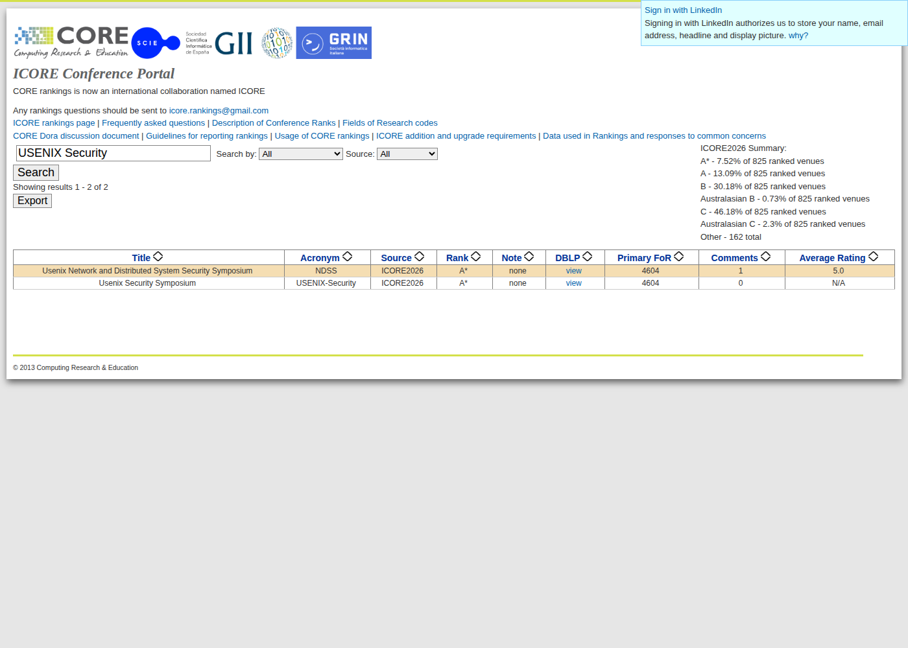

| Selected seed | Approved own idea |
| Group head | Syed Kalbe Raza (22I-0794) |
| Member | Shayan Ahmed (22I-0822) |
| Repository (Deliverable C) | github.com/shayanop/Guardian-Tx |
Reference. N. Ruaro, F. Gritti, D. Meng, R. McLaughlin, I. Grishchenko, C. Kruegel, and G. Vigna, “Approve Once, Regret Forever: On the Exploitation of Ethereum’s Approve-TransferFrom Ecosystem,” in Proc. 34th USENIX Security Symp., Seattle, WA, USA, Aug. 2025, pp. 1281–1298 [1].
Proof of ranking. USENIX Security Symposium is ranked A* in the ICORE2026 conference rankings (Fig. 1).

transferFrom mechanism, the same surface GuardianTx guards (approve, setApprovalForAll, permit, transferFrom)transferFrom; if an attacker controls that call's parameters → steals assets of every user who approved the app. Authors name it ACT (Approved Controllable TransferFrom); >$65M losses alreadyRow 1 (★, shaded) is the base paper. Numbers are taken from each paper’s published version.
| # | Title (short) | Year & Venue | Dataset / Benchmark | Method / Architecture | Eval. Metrics | Key Results | Limitation / Gap |
|---|---|---|---|---|---|---|---|
| 1 ★ | Approve Once, Regret Forever (Osprey) [1] | 2025, USENIX Security (A*) | Ecosystem-wide Ethereum contract scan | ACT vulnerability detection + automatic PoC exploit generation | # flagged, # exploitable, USD at risk | 32,582 flagged; 410 exploitable; >$3.4M threatened | Offline, contract-side; no user-side decision at signing |
| 2 | DeepTx [2] | 2025, ASE (Tool Demo) | Authors’ own phishing tx set | Pre-sign simulation; behaviour/context/UI features; multi-LLM consensus + self-reflection | Precision, recall | “High” P/R (no figures in abstract) | No injection evaluation; no calibration; fixed pipeline |
| 3 | Agent Security Bench [3] | 2025, ICLR | 10 scenarios, 10 agents, 400+ tools, 13 LLMs | Benchmark of 27 attack/defense types (DPI, IPI, memory poisoning, PoT backdoor, mixed) | Attack success rate + 6 others | Highest avg. ASR 84.30%; defenses of limited effect | General agents; no transaction/blockchain setting |
| 4 | Drainer-as-a-Service [4] | 2025, ACM IMC | Ethereum, Mar 2023–Apr 2025 | Snowball sampling over profit-sharing transactions | USD drained, # victims | ~$135M drained; 76,582 victims | Measurement only; builds no defense |
| 5 | Payload-based Tx Phishing [5] | 2025, NDSS | 5,000-tx ground truth; 300-day Ethereum scan | Rule-based multi-dimensional detection | Accuracy | >99% accuracy; 130,637 phishing tx ($341.9M); 1,726 addresses reported | Hand-crafted rules; no calibration or abstention |
| 6 | Blockchain Address Poisoning [6] | 2025, USENIX Security | Ethereum + BSC, 2-year window | Detection system + measurement + attacker clustering | # attacks, # victims, USD lost | 270M attacks on 17M victims (13× prior); ≥$83.8M lost | Single attack type; measurement, not prevention |
| 7 | PROXiFY [7] | 2025, ASE (Tool Demo) | High-confidence proxy benchmark | Bytecode-only proxy detection and classification | Precision, recall | 98.6% P, 97.1% R | Proxy detection only |
| 8 | Agent4Vul [8] | 2025, Sci. China Inf. Sci. | Contract source + bytecode CFGs | Multimodal LLM agents (comments + vectors) | F1 | +3.61–16.32% F1 over AI baselines | Audit-time; no injection robustness |
| 9 | LLM-SmartAudit [9] | 2025, IEEE TSE | Common-vuln benchmark, real projects, CVE set | LLM-powered multi-agent detection | Accuracy, CVEs found | 98% acc.; 12/13 CVEs | Audit-time; no calibrated per-tx risk |
| 10 | Smart-LLaMA-DPO [10] | 2025, ISSTA (PACMSE) | 4 vuln types + machine-unauditable, with explanations | LLaMA-3.1-8B: continual pre-training + SFT + DPO | F1, accuracy | +10.43% F1, +7.87% acc. | Detection + explanation; no transaction risk |
| 11 | Trust or Escalate [11] | 2025, ICLR | Pairwise LLM-judge data incl. Chatbot Arena subset | Selective evaluation; Simulated Annotators; cascaded escalation | Human agreement, coverage | >80% guaranteed agreement at ~80% coverage | LLM-judge setting, not blockchain risk |
rules._looks_poisoned); source of ground-truth patterns| Gap | Supporting evidence | Proposed approach | How it will be measured |
|---|---|---|---|
| G1 – No pre-signing, injection-resilient defense for the signer | [1], [2], [3], [4], [6] | Pre-sign agent that decodes/simulates the tx and sanitises untrusted on-chain text at a fixed boundary before any LLM reasoning | Detection P/R/F1 on benign/malicious tx; attack success rate over the 120-case, 5-category injection taxonomy |
| G2 – Detectors are not calibrated and never abstain | [2], [5], [8], [10], [11] | Calibrated risk score with an ALLOW / WARN / BLOCK / ESCALATE abstention band | ECE, Brier score, risk–coverage curve, false-block rate, alongside P/R/F1 |
| G3 – No agent investigates the full pre-signing context | [1], [2], [5], [7]; agentic precedent [8], [9] | Agent selects tools per transaction (decode, simulate, allowance, proxy) vs. the fixed non-agentic baseline | F1 vs. baseline on held-out unseen attack types; tool calls per tx; latency; API cost |
[1] N. Ruaro, F. Gritti, D. Meng, R. McLaughlin, I. Grishchenko, C. Kruegel, and G. Vigna, “Approve once, regret forever: On the exploitation of Ethereum’s approve-transferFrom ecosystem,” in Proc. 34th USENIX Security Symp., Seattle, WA, USA, 2025, pp. 1281–1298.
[2] Y. Liu, X. Li, and Y. Li, “DeepTx: Real-time transaction risk analysis via multi-modal features and LLM reasoning,” in Proc. 40th IEEE/ACM Int. Conf. Automated Software Engineering (ASE), Tool Demonstration Track, 2025. [Online]. Available: arXiv:2510.18438
[3] H. Zhang, J. Huang, K. Mei, Y. Yao, Z. Wang, C. Zhan, H. Wang, and Y. Zhang, “Agent Security Bench (ASB): Formalizing and benchmarking attacks and defenses in LLM-based agents,” in Proc. Int. Conf. Learning Representations (ICLR), 2025.
[4] B. He, Y. Hu, Z. Chen, Y. Chen, T. Yu, R. Chang, L. Wu, and Y. Zhou, “Unmasking the shadow economy: A deep dive into drainer-as-a-service phishing on Ethereum,” in Proc. ACM Internet Measurement Conf. (IMC), 2025, pp. 430–444, doi: 10.1145/3730567.3764476.
[5] Z. Chen, Y. Hu, B. He, D. Luo, L. Wu, and Y. Zhou, “Dissecting payload-based transaction phishing on Ethereum,” in Proc. Network and Distributed System Security Symp. (NDSS), San Diego, CA, USA, 2025.
[6] T. Tsuchiya, J.-D. Dong, K. Soska, and N. Christin, “Blockchain address poisoning,” in Proc. 34th USENIX Security Symp., Seattle, WA, USA, 2025.
[7] I. Qasse, M. Hamdaqa, and B. Þ. Jónsson, “PROXiFY: A bytecode analysis tool for detecting and classifying proxy contracts in Ethereum smart contracts,” in Proc. 40th IEEE/ACM Int. Conf. Automated Software Engineering (ASE), Tool Demonstration Track, 2025.
[8] W. Jie, W. Qiu, H. Yang, M. Guo, X. Huang, T. Lei, Q. Zhang, H. Zheng, and Z. Zheng, “Agent4Vul: Multimodal LLM agents for smart contract vulnerability detection,” Sci. China Inf. Sci., 2025, doi: 10.1007/s11432-024-4402-2.
[9] Z. Wei, J. Sun, Y. Sun, Y. Liu, D. Wu, Z. Zhang, X. Zhang, M. Li, Y. Liu, C. Li, M. Wan, J. Dong, and L. Zhu, “Advanced smart contract vulnerability detection via LLM-powered multi-agent systems,” IEEE Trans. Softw. Eng., vol. 51, no. 10, pp. 2830–2846, 2025, doi: 10.1109/TSE.2025.3597319.
[10] L. Yu, Z. Huang, H. Yuan, S. Cheng, L. Yang, F. Zhang, C. Shen, J. Ma, J. Zhang, J. Lu, and C. Zuo, “Smart-LLaMA-DPO: Reinforced large language model for explainable smart contract vulnerability detection,” Proc. ACM Softw. Eng., vol. 2, no. ISSTA, pp. 182–205, 2025, doi: 10.1145/3728878.
[11] J. Jung, F. Brahman, and Y. Choi, “Trust or escalate: LLM judges with provable guarantees for human agreement,” in Proc. Int. Conf. Learning Representations (ICLR), 2025.
Title: GuardianTx: An Injection-Resilient Agent for Risk-Calibrated Pre-Signing Blockchain Transaction Defense.
Seed: approved own idea.
approve/permit → unlimited token authority; setApprovalForAll → whole NFT collection; look-alike address → diverted transferpython -m guardiantx.cli); baseline already in repo| Gap | Measurable success criterion |
|---|---|
| G1 | Detection F1 at or above the baseline, with injection attack success rate below 10% across the 120-case taxonomy. |
| G2 | Lower ECE than the uncalibrated scorer, at an operating point with false-block rate below 5% on benign transactions. |
| G3 | Higher F1 than the non-agentic baseline on held-out unseen attack types, at acceptable tool-call cost and latency. |
data/seed_transactions.jsonl, built by data/build_seed.py); expand to ~400 from documented drainer patterns (approval phishing, NFT operator approvals, proxy interactions, address poisoning) [1],[4],[5],[6]guardiantx/llm.py; baseline needs no modelTransaction → DecodedCall → Finding[] → RiskReport in guardiantx/contracts.py, all JSON-serialisablellm.sanitize() at the tool-output → LLM boundarytransferFrom pull → cases needing context the rules lack| Metric (24-tx seed set, positive = BLOCK/ESCALATE) | Accuracy | Precision | Recall | F1 | False-block rate |
|---|---|---|---|---|---|
B1 rules baseline (eval/evaluate.py) | 0.875 | 1.000 | 0.750 | 0.857 | 0.000 |
eval/evaluate.py)| Stage | Deliverable | Status |
|---|---|---|
| M1 | Rules baseline, seed dataset, evaluation harness, tests | Done |
| M2 | Corpus expanded to ~400 transactions; 120 injection cases written | Phase 2 |
| M3 | Agent loop with all four tools (adds allowance inspector, proxy resolver) | Phase 2 |
| M4 | Injection-resilience layer and calibrated scorer | Phase 2–3 |
| M5 | Full evaluation with comparisons and ablations | Phase 3 |
| M6 | Results write-up / paper | Final |
| Member | Primary responsibilities |
|---|---|
| Syed Kalbe Raza (22I-0794), group head | Agent orchestration and tools (G3); calibration and evaluation harness (G2) |
| Shayan Ahmed (22I-0822) | Injection taxonomy and resilience layer (G1); dataset construction and literature review |
Both members remain responsible for understanding the complete project.